Update a Delivery
Find an item, increase its quantity, save the change, and record the update.
MOBILE INVENTORY MANAGEMENT APP
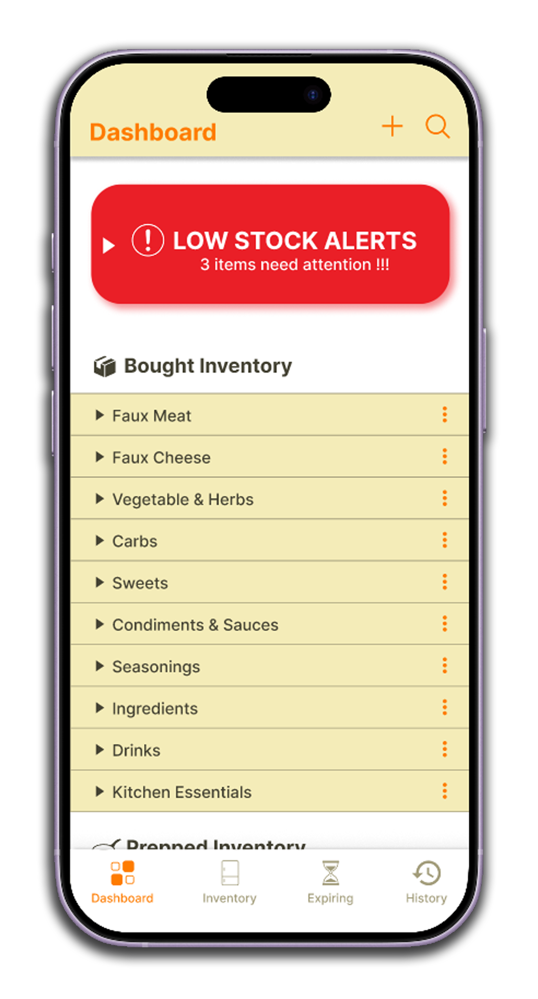
UX/UI Designer
Figma, Adobe Photoshop
COGS 187A · Mobile App Project
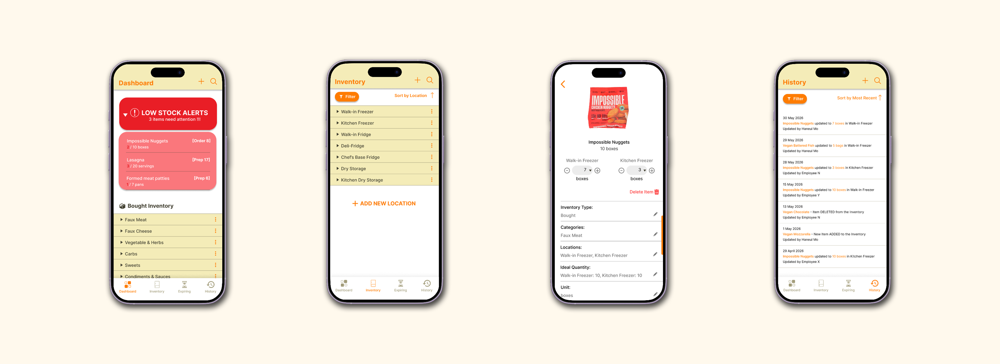
Pictured above: a quick look at the dashboard, inventory, item details, and history screens.
Val's Vegan Kitchen needed a mobile inventory management experience that could
support both restaurant managers and kitchen staff across multiple storage
locations and food categories.
The goal was to make common tasks—such as updating quantities, preparing weekly
orders, adding new ingredients, and reviewing inventory history—quick and
understandable in a fast-paced restaurant environment.
Restaurant inventory work is repetitive and time-sensitive. Employees move through
walk-in freezers, refrigerators, and dry-storage areas while counting items, while
managers need to quickly identify shortages and prepare orders.
The app needed to help users:
I designed the project around four realistic restaurant scenarios.
Find an item, increase its quantity, save the change, and record the update.
Identify low-stock items and compare current quantities with ideal stock.
Create a new item and assign its category, location, quantity, and unit.
Investigate when an item was last updated and who made the change.
One of my biggest decisions was whether the inventory should be organized by food category or by storage location.
I selected location as the default view because it better supports the real-world counting process. A sorting option still allows managers to switch to category view when needed.
I reviewed Pantry Check, Your Food, KitchenPal, and SubVentory to understand how existing inventory products organize information, communicate stock levels, and support common inventory tasks.
The first prototype included a dashboard with low-stock alerts, an inventory page organized by location, and an Add Item form using dropdowns to reduce input errors.

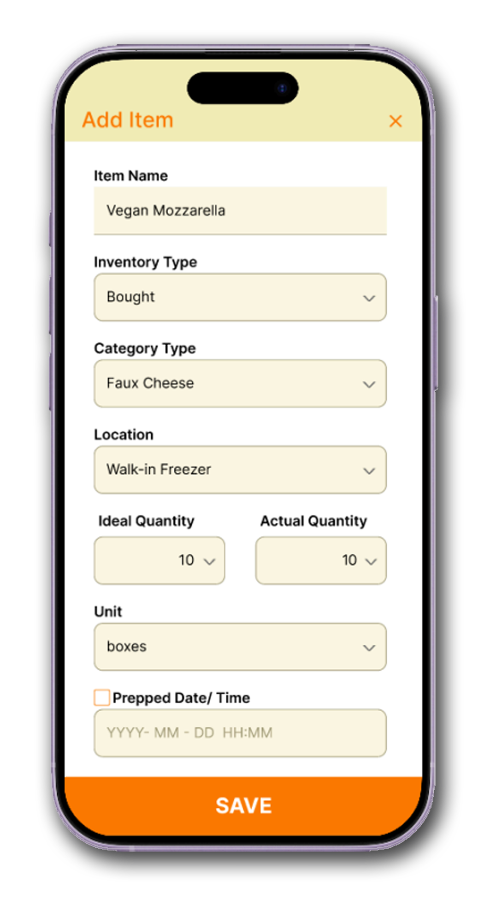
I conducted think-aloud usability testing with four participants. Each participant completed one restaurant scenario while I observed where they clicked, hesitated, became confused, and whether they could finish without assistance.
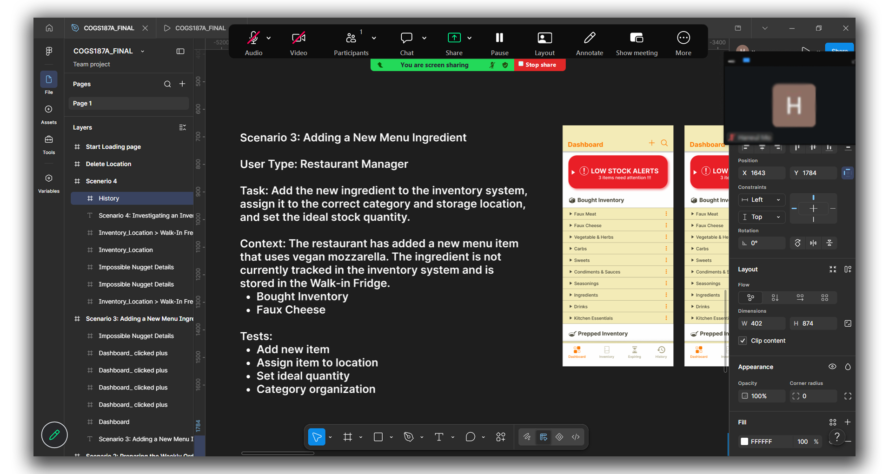
A participant scanned the dashboard for several seconds and opened a category before noticing the alert area.
Participants were unsure whether a quantity update or newly added item had been successfully saved.
A participant searched through the bottom navigation because they did not realize an inventory item opened a detailed page.
REDESIGN 01
The original alert used a color palette similar to the rest of the dashboard, so it blended into the page. I changed it to a stronger red, increased spacing around it, and strengthened the visual hierarchy so urgent items receive immediate attention.
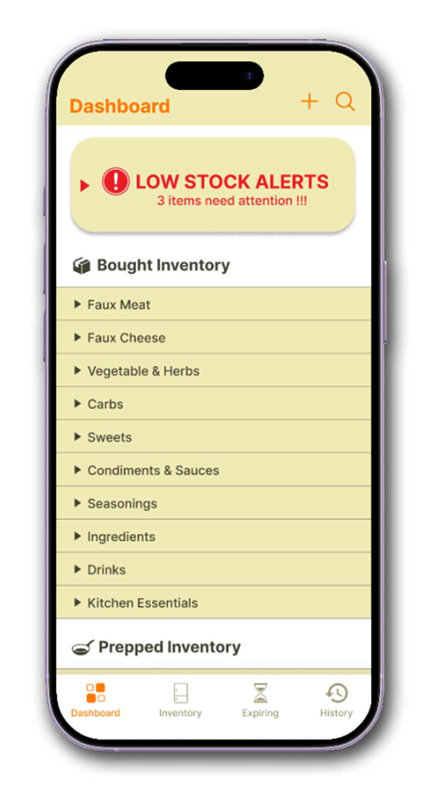

REDESIGN 02
The original workflow ended on the Add Item screen after the user tapped Save. I added a success screen that confirms the action and provides a direct path to the newly created item's details.
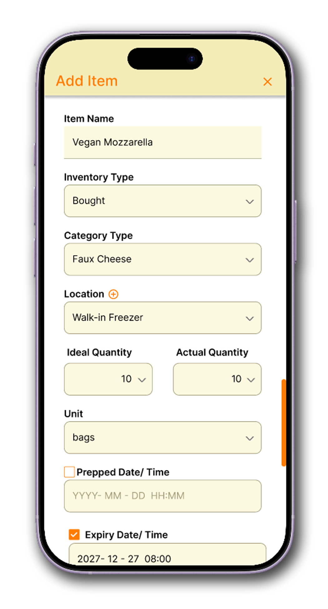
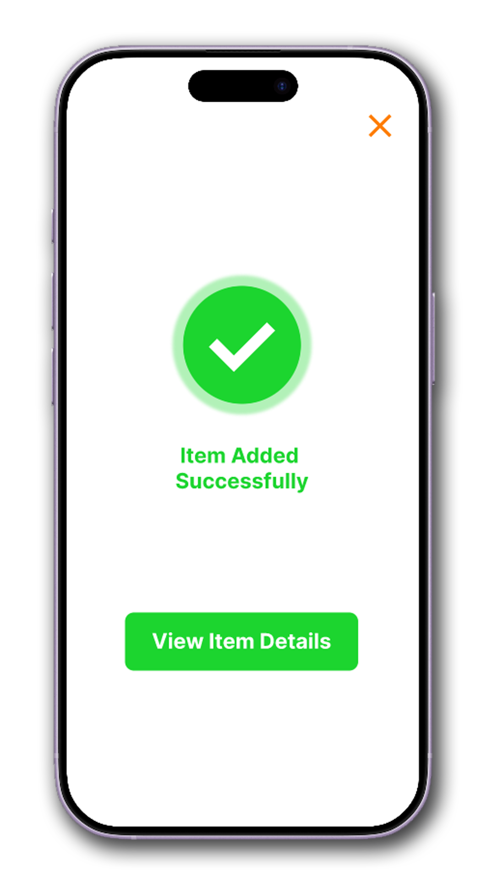
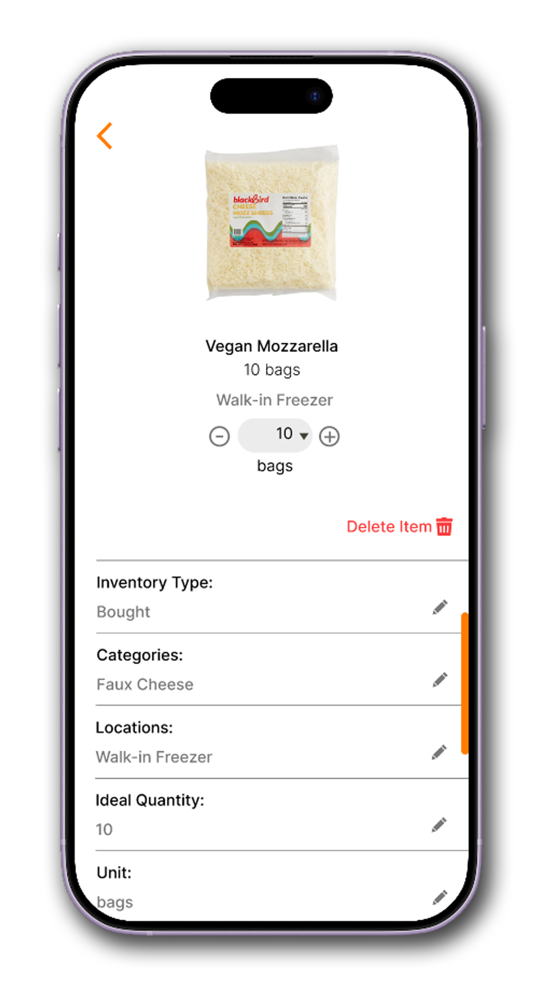
REDESIGN 03
I tested both pencil icons and chevrons. The pencil suggested editing, while the chevron clearly communicated navigation to another screen. I selected the chevron because participants immediately understood that more information was available.
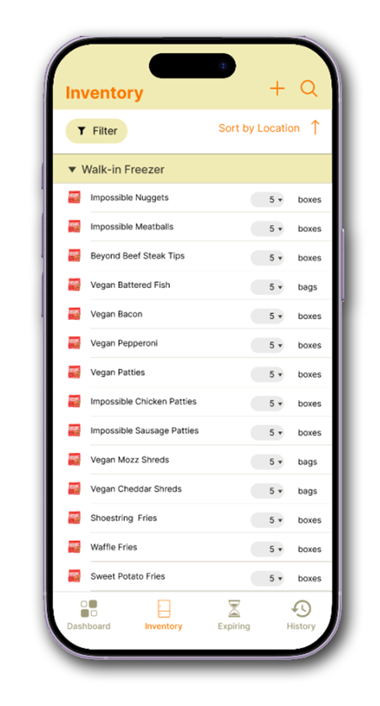
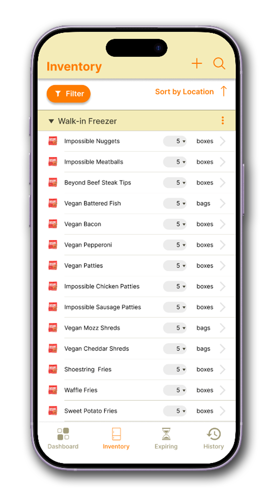
The final prototype supports both manager and employee needs while reducing searching and manual calculations.
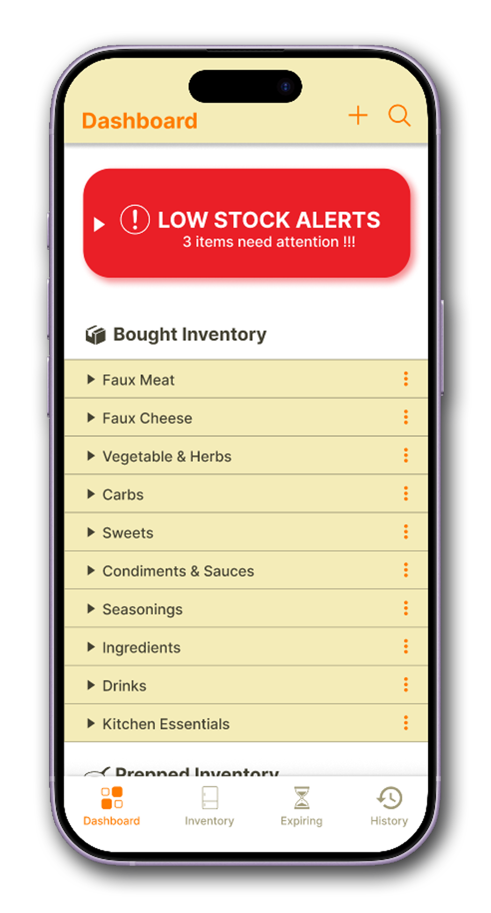
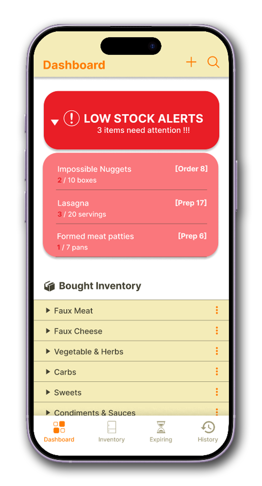
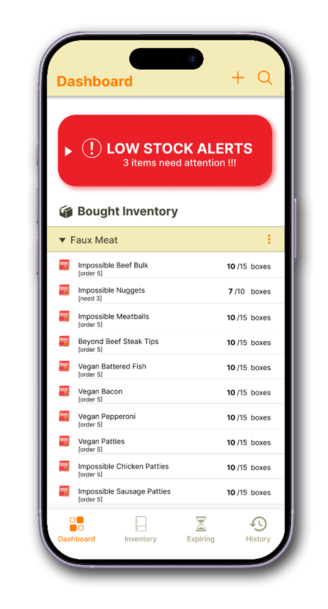
Employees can move through one storage location at a time, expand its inventory, and update quantities using simple dropdown controls.

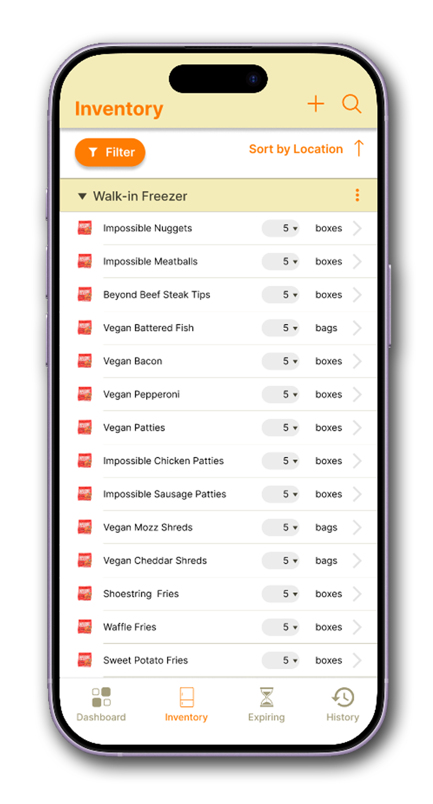
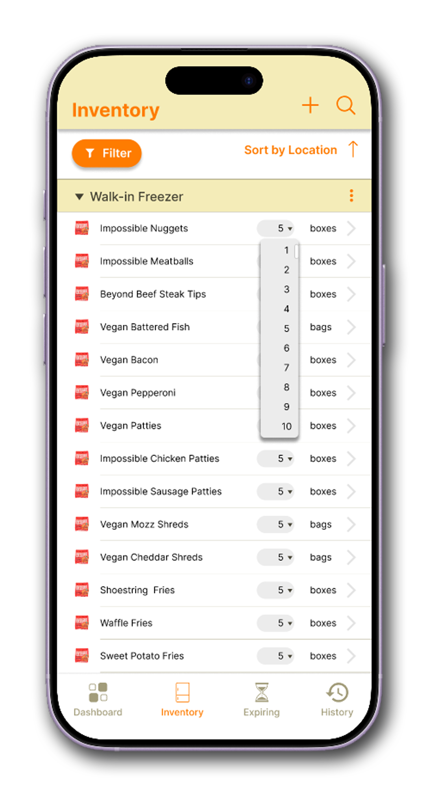
The final design includes a dashboard, location-based inventory view, item details, history tracking, low-stock ordering support, and tools for adding items and storage locations.

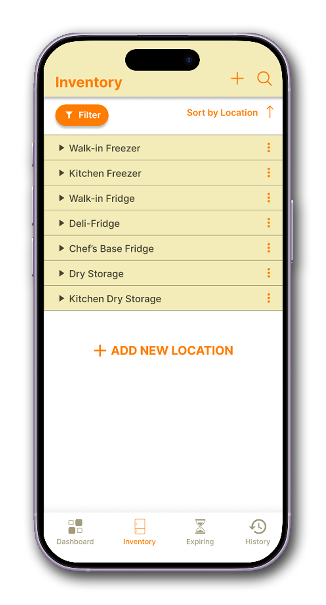
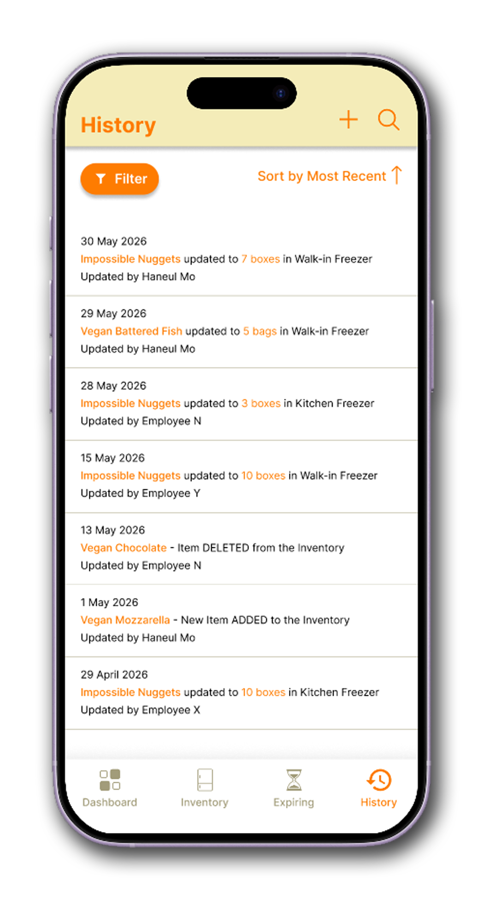

Experience the final prototype by completing common inventory management tasks, including updating stock, adding ingredients, reviewing history, and checking low-stock alerts.
Interactive preview of the final mobile-app prototype.
This project showed me how strongly information architecture affects the usability
of a workflow. Organizing inventory by location was not simply a visual choice—it
came directly from understanding how employees physically move through a restaurant.
User testing also reminded me that a design can appear clear to its creator while
still hiding important interactions from other people. The low-stock alert,
confirmation screen, History page, and chevron indicators were all shaped by moments
where participants behaved differently from what I expected.
Although the prototype successfully addressed the primary usability issues, there are several opportunities for future improvement: